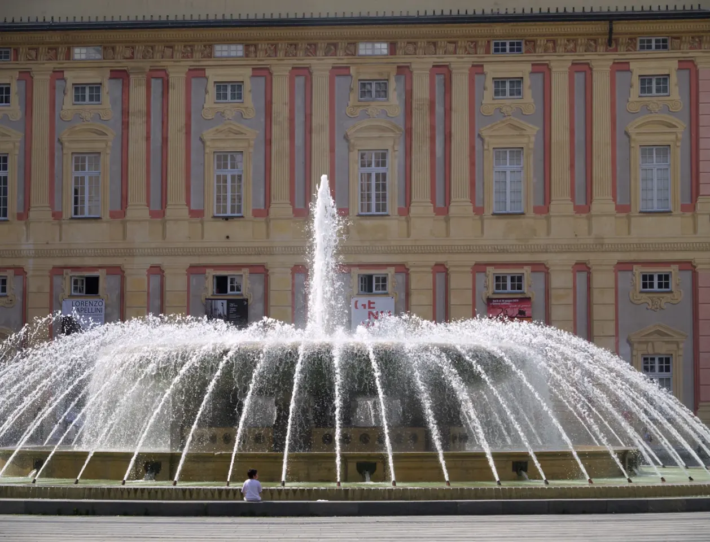
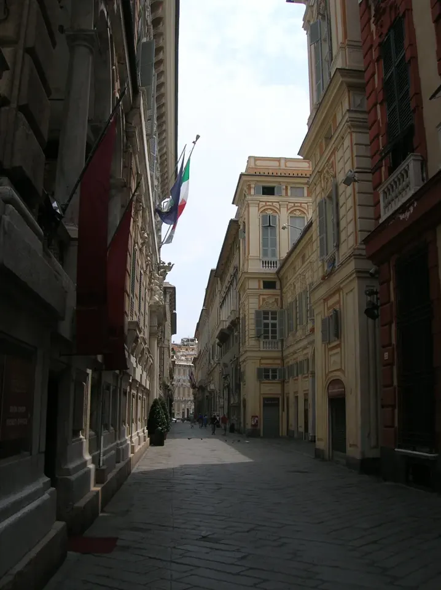
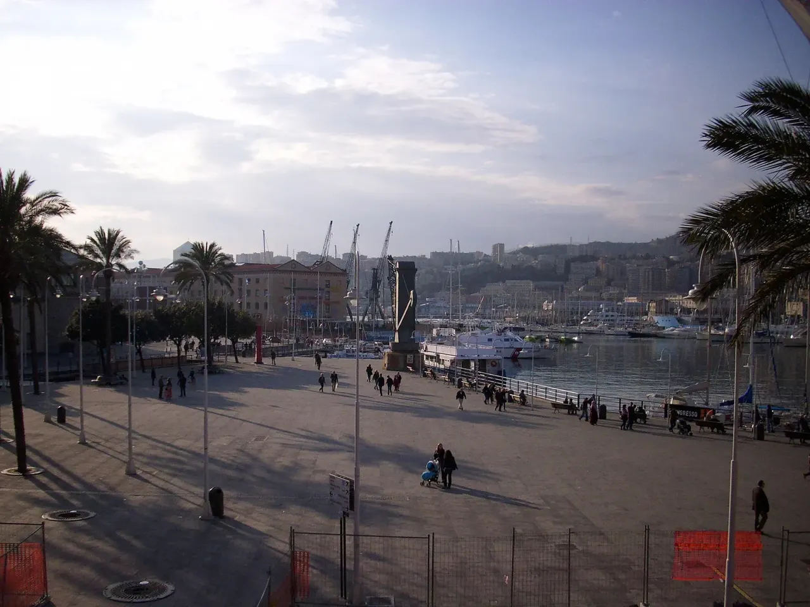
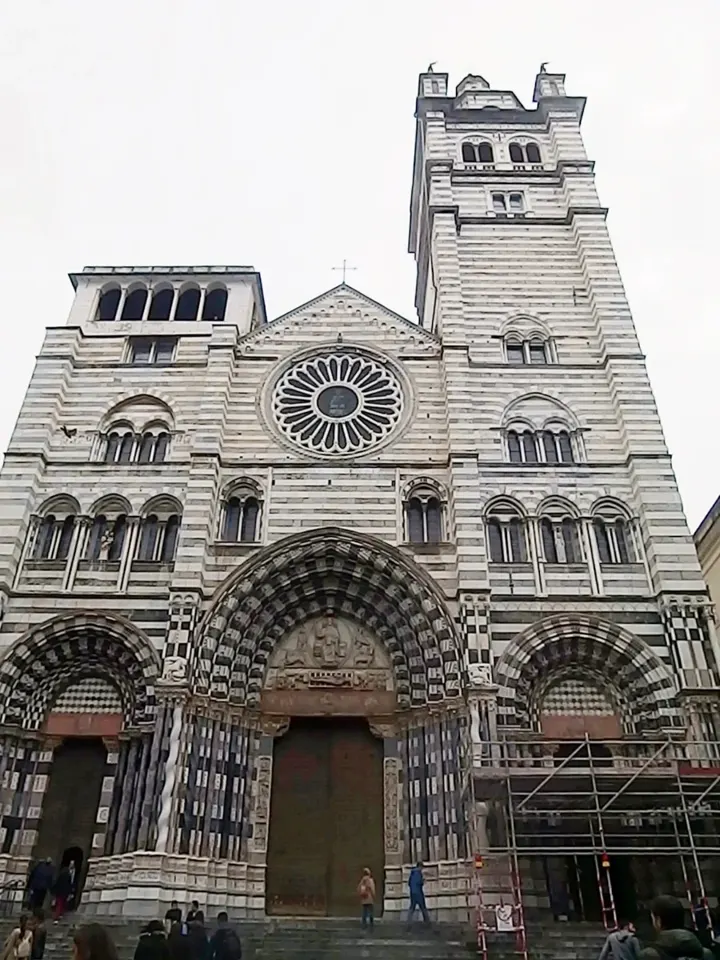

Portoria
Piazza De Ferrari

Il centro della città moderna si raccoglie intorno alla grande fontana in bronzo del 1936.
Una curiosità
La piazza è dedicata al duca di Galliera Raffaele De Ferrari.
ESPLORA GENOVA
Tra palazzi, caruggi e porto: qui la storia della città si legge a ogni passo.
Prè, Molo, Maddalena, Portoria, San Vincenzo, Carignano, Castelletto, Oregina e Lagaccio.
Comune · Municipi e quartieri ↗
Portoria

Il centro della città moderna si raccoglie intorno alla grande fontana in bronzo del 1936.
La piazza è dedicata al duca di Galliera Raffaele De Ferrari.
Maddalena

La cinquecentesca Strada Nuova racconta l’ambizione delle famiglie aristocratiche genovesi.
I palazzi erano anche strumenti di rappresentanza della Repubblica.
Centro storico
Un sistema di dimore private sosteneva l’ospitalità pubblica degli ospiti illustri.
Il sito UNESCO è stato iscritto nel 2006.
San Vincenzo e Portoria
Portici e architetture tra Ottocento e Novecento accompagnano la discesa verso Brignole.
Il Ponte Monumentale permette di leggere la città su due livelli.
Molo / Piazza Matteotti
La sede del potere della Repubblica è oggi uno dei grandi luoghi culturali di Genova. Il nucleo del palazzo si formò nel Medioevo, accorpando edifici preesistenti.
Il nome Ducale si affermò con il primo doge, Simon Boccanegra, nel 1339. La Torre Grimaldina conserva la memoria del passato del palazzo.
Molo

La riqualificazione per le celebrazioni colombiane del 1992 ha restituito alla città la vecchia area portuale.
Il progetto è dello studio Renzo Piano Building Workshop.
Molo

La cattedrale è una tappa centrale per leggere la storia religiosa e artistica genovese.
La via omonima accompagna la discesa verso il Porto Antico.
Prè
La via monumentale seicentesca ospita Palazzo Reale, nato come dimora della famiglia Balbi.
La residenza passò ai Durazzo e poi ai Savoia.
Centro storico
La Strada Nuovissima prosegue il percorso monumentale delle Strade Nuove.
Piazza della Meridiana la raccorda a via Garibaldi.
Molo
Uno spazio tra città antica e centro moderno, su cui si apre Palazzo Ducale.
L’ingresso principale del palazzo è qui, vicino a De Ferrari.
Molo
Il palazzo si affaccia sull’antica area portuale, tra la città e il mare.
È una delle tappe dell’itinerario ufficiale tra il porto e le Strade Nuove.
Molo
Il grande complesso lungo il Molo conserva nel nome la memoria delle attività portuali.
Dalla punta del Molo si osservano il bacino e il profilo della città.
Castelletto

Il belvedere domina i tetti del centro storico e il porto.
Fino al 1849 questo spazio era occupato da una fortezza.
Molo, Maddalena e Prè
La città antica si esplora attraverso vicoli, piazze e percorsi pedonali.
Basta allontanarsi dalle vie principali per cambiare prospettiva sui palazzi.
I riferimenti descrivono il percorso urbano. Non sono indicazioni su sensi di marcia, cantieri o accessibilità.
La Strada Nuova cinquecentesca è una strada di rappresentanza, fiancheggiata dalle dimore delle famiglie genovesi. Vi si trovano Palazzo Rosso, Palazzo Bianco e Palazzo Tursi.
Comune · Via Garibaldi tra Fontane Marose e Meridiana ↗ · Controllo: 17 ottobre 2026.
Portici e palazzi tra Ottocento e Novecento raccontano la trasformazione della città. Il Ponte Monumentale sovrasta la via; il Mercato Orientale è accessibile lungo il percorso.
Il riferimento finale indica la zona di arrivo del percorso turistico, non una misura catastale del tracciato.
Visit Genoa · Via XX Settembre ↗ · Controllo: 17 ottobre 2026.
La strada seicentesca collega il centro storico alla zona della stazione Principe. I suoi palazzi ospitano istituzioni culturali e universitarie.
Università di Genova · Via Balbi ↗ · Controllo: 17 ottobre 2026.
La Strada Nuovissima prosegue l’itinerario monumentale da via Garibaldi verso la zona di via Balbi.
Comune · Genova e i suoi tesori ↗ · Controllo: 17 ottobre 2026.
Questa è una prima selezione: altre strade e altri luoghi saranno aggiunti dopo la verifica delle fonti.
Scegli un altro municipio →